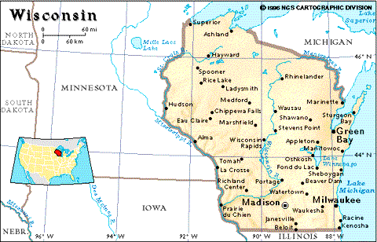
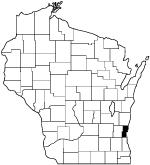

CHAPTER THREE
CHAPTER THREE 

In Europe, as Luxembourg was continually being awarded as a prize of war to the Netherlands, Belgium, Germany Spain and France, some began looking to the United States as an escape from the political intrigue, overcrowding and famine brought on by drought and blight. For many Luxembourgers, Wisconsin was their intended destination.
The name Wisconsin is derived from the French version of an Ojibwa word meaning "gathering of the waters" or "place of the beaver". [1] The original inhabitants of Wisconsin were the Menominee and Winnebago Indian tribes. French fur trapers began exploring the area in the seventeenth century and later following the Revolutionary War, Wisconsin became part of the United States. Large numbers of settlers began coming in the 1820's to work in the lead mines in southwestern part of the state. Wisconsin's nickname the Badger State refers not to the animal but to the miners who burrowed like badgers in search of lead. In addition to lead, the state's other natural resources include iron ore, limestone, zinc, clay and peat. Sand and gravel are also mined in nearly every county.

Today Wisconsin is the nation's leading dairy state and a major producer of corn, but manufacturing is the chief industry. Wisconsin became a state in 1848 and the Homestead Act of 1862 made owning land an attainable goal to the industrious and hardworking. Germans were the largest immigrant group to settle in Wisconsin, followed by the Irish.
Whether Luxembourg immigrants were intentionally following in the footsteps of many southern Germans, also largely Catholic, who settled in Wisconsin during the period of 1840-1880, many Luxembourgers also quickly crossed the eastern United States after their arrival and headed to the Midwest, the west Andrew Greeley touted for its opportunities when he published his oft-repeated "Go west young man." [2]
In addition to the major Luxembourg settlements in Ozaukee County, Wisconsin, large numbers of Luxembourgers settled in Dubuque and St. Donatas, Iowa; and Rollingstone, Minnesota. Later the children of immigrant Luxembourgers fanned out to settle in the Dakotas, Kansas and Nebraska.
Most Luxembourgers traveled a well-established route arriving in the United States in New York City and then traveling across the state of New York to the Great Lakes and barging down into Lake Michigan. This route was first taken in 1845 by a group of fifteen families who settled in an area "six miles from Port Washington which subsequently was given the name of Holy Cross." [3]
The first Luxembourg settlers in Ozaukee County did not choose the location lightly. A scout from the party was sent on ahead to Milwaukee to meet with the Catholic Archbishop John Henni and it was at his recommendation that the immigrants continued north to Port Washington. [4] The rolling hills of eastern Wisconsin, with its fertile soil may have been very reminiscent of the country the immigrants had left behind. This area is the state's best agricultural region. After the first major group of Luxembourgers emigrated and settled in Wisconsin in 1845, a steady stream began leaving for the New World, over the course of the next decade. By 1889, more that 400 Luxembourg families lived in Ozaukee County. [5]
At time the first Luxembourg settlers arrived the area was still heavily forested and "women wept to see so much valuable material go up in flames" when the men cleared the abundance of timber, remembering the scarcity of wood in Luxembourg and Belgium. [6] Despite the availability of timber, many Luxembourgers crafted stone houses in their new homelandlike those they had left behind in Europe.

The major immigrant groups to Ozaukee County were the Germans, Irish and Luxembourgers. Each group settled in specific townships: the Germans in Cedarburg; Luxembourgers in Belgium; and the Irish in Fredonia and Mequon, and retain their distinct cultural heritages to this day. Belgium is the home of the annual Luxembourg Fest held annually each August. Each year the Fesitval honor's immigrant Luxembourg families who settled in Belgium, Dacada, Fredonia, Holy Cross, Lake Church, Port Washington and Waubeka from 1845-1860.
Saukvillle, in Ozaukee County, held the first outdoor market day or fair, and this custom spread rapidly to other areas. Bernard Cigrand, a teacher and Luxembourger, is credited with founding Flag Day on June 14th, 1885 at the Stony Hill School near Waubeka.
NOTES - CHAPTER THREE
1. Funk and Wagnalls New Encyclopedia. INFOPEDIA 2 (CD-ROM) , 1996. s.v. Wisconsin.
2. Newcomer, James. Grand Duchy of Luxembourg: the Evolution of Nationhood 963 A.D. to 1983. University Press of America. 1984, pg. 57.
3. Ensch, Jean. Muller, Jean-Claude. Owen, Robert E. Luxembourgers in the New World : a reedition based on the work of Nicholas Gonner "Die Luxemburger in der Neuen Welt", Dubuque, Iowa, 1889 : published with a complete index ... Esch-su
r-Alzette, Grand Duchy of Luxembourg : Editions-Reliures Schortgen, 1987, pg. 131.
4. Krier, Beatrice Wester. Tapestry of Luxembourgers : The Making of Belgium. Belgium, Wis. : B.W. Krier, 1987, pg. 54.
5. Ensch, pg. 131.
6. Krier, pg. 59.